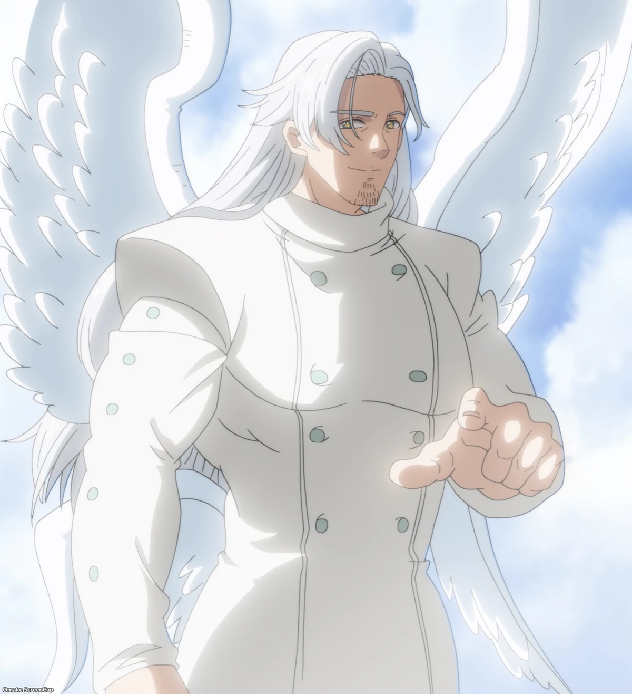

Os Arcanjos

Ludociel é um dos Quatro Arcanjos do Clã das Deusas e atua como seu líder. Sua Graça se chama Flash, dando a ele uma velocidade extremamente elevada. Ele é irmão de Mael e Tarmiel, dois outros membros importantes do Clã das Deusas. Ludociel possui um forte ódio pelos demônios por causa da Guerra Santa. Ele é extremamente orgulhoso e inicialmente considera os humanos inferiores às deusas. Ludociel pode utilizar o corpo de Margaret Liones como receptáculo para permanecer no mundo humano. Sua velocidade é uma de suas principais vantagens em combate, permitindo que ataque e se mova antes que muitos adversários consigam reagir. A relação entre Ludociel e Mael é importante para a história, principalmente por causa dos acontecimentos envolvendo Estarossa. Apesar de sua personalidade inicialmente cruel, Ludociel começa a mudar sua maneira de enxergar os humanos ao longo da história. Ele é um dos personagens que mostram como a divisão entre "bem" e "mal" em Nanatsu no Taizai não é tão simples quanto parece.

Mael é um dos quatro Arcanjos do Clã das Deusas e é considerado um dos guerreiros mais poderosos da obra. Ele é o irmão mais novo de Ludociel, outro dos quatro Arcanjos. Mael possui o Mandamento do Amor? Não. Originalmente, ele era um Arcanjo e possuía a Graça Sunshine. A Graça Sunshine é a mesma habilidade que posteriormente ficou associada a Escanor. Mael foi vítima de uma manipulação de Gowther, que alterou suas memórias e fez com que ele acreditasse ser Estarossa. Por causa dessa alteração, Mael passou a acreditar que havia matado Meliodas e que era irmão de Zeldris. A aparência de Estarossa, na verdade, era a aparência de Mael depois que suas memórias foram modificadas. Mael teve uma relação importante com Elizabeth antes de suas memórias serem alteradas. Ele era apaixonado por ela. Quando suas memórias verdadeiras retornam, Mael entra em conflito com tudo o que acreditava sobre si mesmo. Mael é um dos personagens diretamente ligados à história de Escanor, já que a Graça Sunshine foi originalmente dele. Mesmo sendo extremamente poderoso, Mael não é apresentado como um personagem maligno. Grande parte de suas ações como Estarossa aconteceu devido à manipulação de suas memórias. Mael também aparece em Nanatsu no Taizai: Mokushiroku no Yonkishi, continuação da história, embora seu papel seja bem diferente.